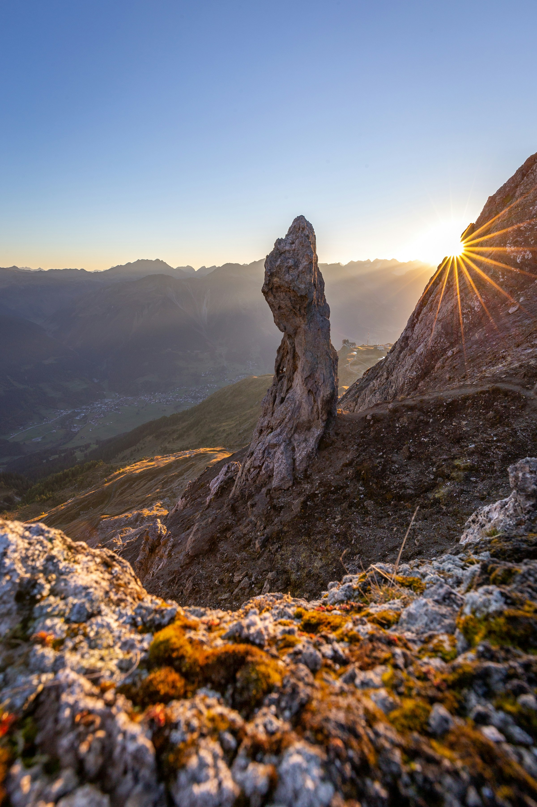
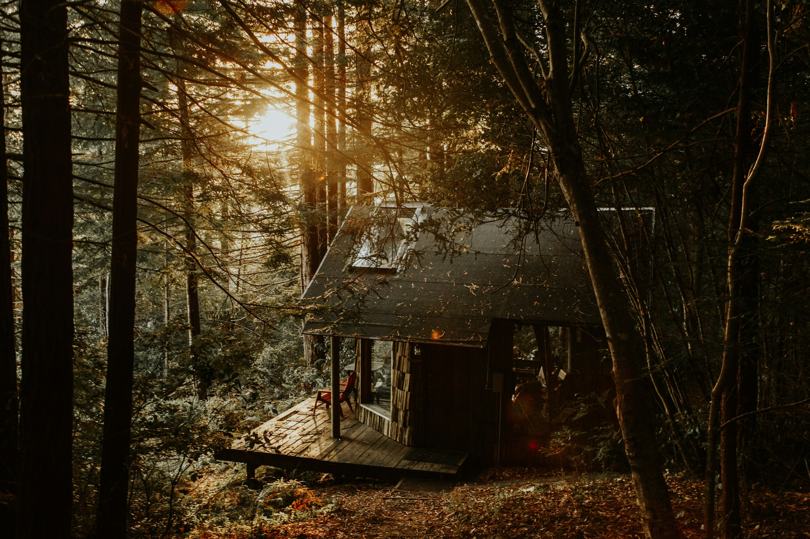

sunriseoverthemontains.jpg"
      type="image/x-icon"
    /><!DOCTYPE html>
<html lang="uk">
  <head>
    <meta charset="UTF-8" />
    <meta http-equiv="X-UA-Compatible" content="IE=edge" />
    <meta name="viewport" content="width=device-width, initial-scale=1.0" />
    <title>Чарівні пейзажі</title>
    <link
      rel="shortcut icon"
      href= "img/
    <script
      src="https://unpkg.com/htmx.org@1.9.10"
      integrity="sha384-D1Kt99CQMDuVetoL1lrYwg5t+9QdHe7NLX/SoJYkXDFfX37iInKRy5xLSi8nO7UC"
      crossorigin="anonymous"
    ></script>
  </head>
  <body>
    <h1><i>Чарівні пейзажі</i></h1>
    <h2>Схід сонця над горою</h2>
    
    <h2>Будинок в лісі</h2>
    
 </body>
</html>
